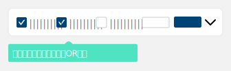

定義
列表頁可以查看和處理大量的資訊，常有導引使用者查看詳情的作用。用戶可以在列表頁進行篩選、新增、進入詳情頁等操作。
規則
- Header 的標題為「列表」。
- 列表頁面底部放置版權宣告。
類型
1. 一般列表
- 由上往下堆疊，搜尋框卡片在最上方，下方為列表列。
- 使用者由搜尋框過濾數據後，可查看下方列表數據，並由列表列進入詳情頁。
2. 頁籤列表
- 以一般列表為基底，並加入頁籤來進行分類。
元素
1. Logo
詳細規範請見 Tab 頁籤。
2. 搜尋框
（1) 一般搜尋 與 進階搜尋
- 預設僅顯示一般搜尋，點選 展開 按鈕，展開進階搜尋欄位，按收合則收起進階搜尋欄位。
（2) 搜尋條件排序方式
- 第一列建議是編號或名稱(Text Field)，非必要請避免在一般搜尋條件中使用Checkbox、Radio Button、日期選單或下拉選單。
- 選項單選時使用 Radio Button，複選時使用 Checkbox，選項多於 6 個時使用 Select。其他細項請參考 Checkbox、Radio Button 以及 Select 的使用規則。
- 搜尋條件的排序：以功能為主（同類型的篩選條件建議可放一起），視覺為輔。
- 將較不重要、且會影響對齊的搜尋條件（例：checkbox、時間）往後放置到最後一列。
（3) 搜尋條件的預設值為空
- 搜尋條件預設欄位皆為空值，除非特殊狀況必須預設條件則不在此限。如：當天日期
- Checkbox 預設皆不選 ；Radio Button 預設為【全部】的選項。
- Radio Button 在搜尋篩選有多個項目第一項為【全部】其次才是分別的選項。
（4) 條件與條件為交集 (AND)
- 搜搜尋的條件與條件是以交集(AND)方式查詢，查詢 條件 A 與 條件B ，A 和 B 兩個都要符合才列出來。
- 例如：搜尋 [ A123 ]開頭的商品編號，與商品名稱 [ 金沙 ] 兩個條件，結果是滿足商品資料符合編號前綴A123開頭，且符合商品名稱含有金沙的商品。
（5) 相同條件內的項目為聯集(OR)
- 同條件下的複選項目，搜尋時屬聯集(OR)方式，即查詢 a 或 b 或 c 其中一個符合的資料。
- 搜尋時在商品狀態 Checkbox 勾選 [缺貨、停售] 兩個狀態，結果是商品資料包含 [缺貨] 或者 [停售] 的相關商品全部列出。

（6) 搜尋條件與列表標題
- 搜尋條件名稱必須與查詢結果列表的標題名稱相同。
- 請盡量避免設定搜尋條件是結果列表裡面沒有的欄位，簡單說就是搜尋條件應小於或等於結果列表的資訊。
（7) 空白鍵不列入搜尋
- 狀況：當從網站或Excel表單複製的文字會帶入空白鍵。搜尋框一律自動去除空白鍵格後，再進行資料搜尋。
- 空白鍵輸入採自動去頭去尾空白，按【搜尋】時執行動作。
3. 列表
（1) 列表顯示筆數統計
- 列表：預設顯示全部資料中最新新增的 20 筆資料。
- 若未勾選列表內 checkbox，文案為：總資料筆數共 【數值】 筆
- 若有勾選列表內 checkbox，文案為：總資料筆數共 【數值】 筆，已勾選 【數值】 筆
- 排序：Checkbox > 動作 > 編號、序號 > 圖片 > 名稱 > 狀態 > 文字類 > 數值類 > 修改時間
(2) 卡片標題
詳細規範請參考 Card 卡片。
(3) 批次動作
詳細規範請參考 Batch 批次動作。
4. 版權宣告
- 僅列表頁面底部需放置版權宣告。